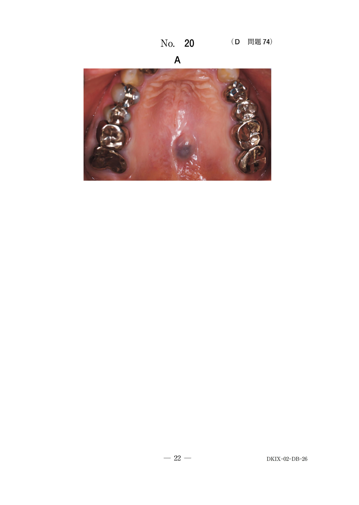
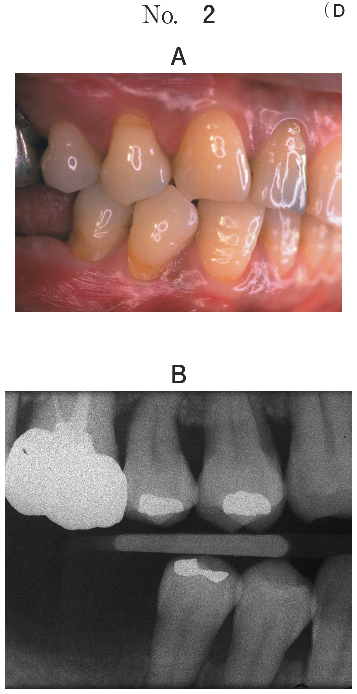

生後3〜6か月、体重5〜6kg以上
※全身麻酔での手術が安全にできる時期
| 術式 | 特徴 |
|---|---|
| Tennison法 | 白唇の赤唇に近い部分に三角弁を挿入。白唇赤唇縁のずれが生じにくい。三角弁が大きく、上口唇中央部に瘢痕。外側唇が過長になりやすい |
| Randall法 | 口唇高径の左右対称性に重点をおき、三角弁を小さめに設定 |
| Cronin法 | 三角弁を赤唇縁より1mm上にとり、赤唇縁の連続性を高めた |
| 術式 | 特徴 |
|---|---|
| Millard法 | 鼻中基部を横断してCupid's bowに達する。Cupid's bowの形がきれいにでき、人中が作成しやすい |
| 術式 | 特徴 |
|---|---|
| Fisher法 | 従来法より一層口唇の解剖形態を重視した手術法 |
| 術式 | 特徴 |
|---|---|
| Le Mesurier法、Hagedorn法、Wang法 | 患側口唇に四角弁を作成し、健側口唇に挿入。組織の切除量が多い |
唇裂に対して初回の口唇形成術を行う時期はどれか。1つ選べ。
【解説】口唇形成術は生後3〜6か月、体重5〜6kg以上で施行する。全身麻酔での手術が安全にできる時期。b（8〜12か月）は口蓋形成術（一期法）の時期。
生後1週の新生児。哺乳障害を主訴として来院した。初診時の口腔内写真（別冊No.26A）と切開線を赤色で記した家族説明用の手術計画の模式図（別冊No.26B）を別に示す。
手術法はどれか。1つ選べ。

【解説】模式図から三角弁法と判断。Randall法は三角弁を小さめに設定し、口唇高径の左右対称性を重視する。b（Wardill法）・e（von Langenbeck法）は口蓋形成術の術式。d（Manchester法）は両側性口唇裂の術式。
6歳の女児。生後3か月で口唇形成術を施行した。顔貌写真（別冊No.6A）と口唇形成術の術式の模式図（別冊No.6B）を別に示す。
本症例の術式はどれか。1つ選べ。

【解説】模式図から各術式を識別する問題。複数の口唇形成術の切開線パターンから正しい術式を選ぶ。三角弁法（Tennison・Randall・Cronin）と回転伸展法（Millard）の切開線の違いを理解しておく必要がある。